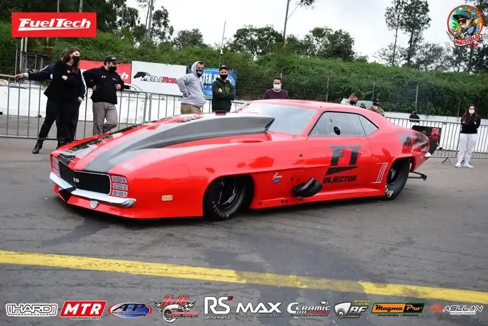
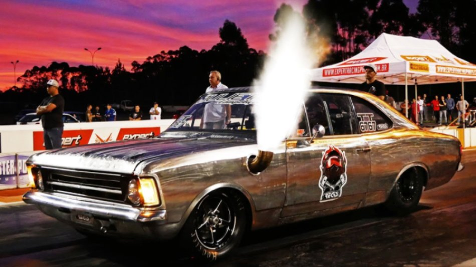
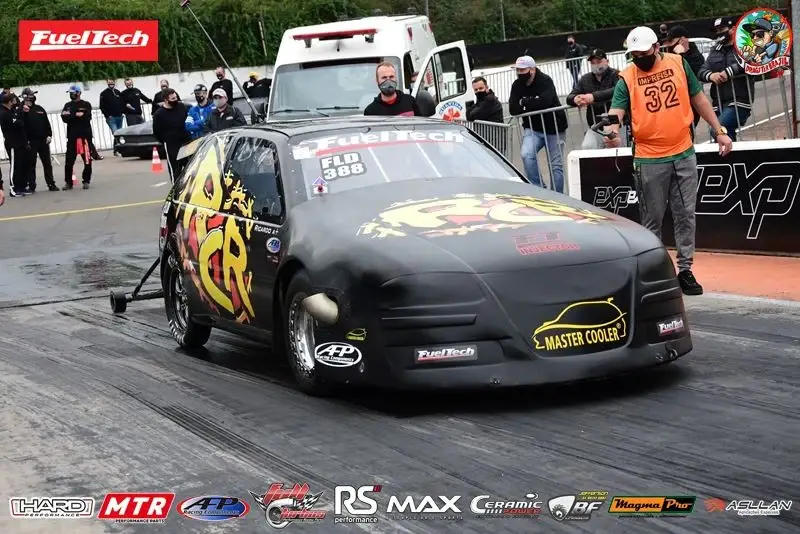

ProMod: São carros com carrocerias feitas em fibra de carbono e utilizam motores com nitro, aspirados, 6 cilindros, 8 cilindros, equipados com turbo ou blower.
Sobre: Motor V8 Hemi biturbo com injeção FuelTech FT600. ~+4.000cv, piloto Roderjan Busato, da equipe Speed Unlimited.
Tempo de Pista nos 201m: 310km/h em 3.8s
TTA: São carros altamente modificados com motores turboalimentados na traseira competem em arrancadas, oferecendo potência extrema e velocidades impressionantes.
Sobre: Motor 6cil. Turbo com injeção FuelTech FT600. ~2.000cv, piloto Israel Fontanella, preparação Equipe. Julieta Competições.
Tempo de Pista nos 402m: 310km/h em 7.1s
São carros de tração dianteira equipados com motores naturalmente aspirados ou superalimentados por meio de turbocompressor, blower ou supercharger, podendo ainda fazer uso de óxido nitroso.
Sobre: Motor AP 16V turbo com FuelTech FT600. ~1600cv, piloto Ricardo Righi, da RCR Motores.
Tempo de Pista nos 402m: 269km/h em 7.8s
